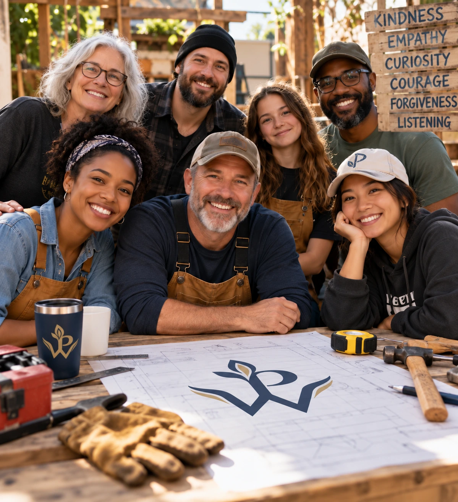

There’s work
to be done.
Come build something better. Learn the tools of a Peacewright.

01 — THE WORK
Peacemaking is work people practice—in relationships, neighborhoods, institutions, and the wider world. There is no single kind of person who does it, and no single tool for every moment.
Make room between an impulse and the response you want to stand behind.
Stay curious long enough to hear what the other person is actually saying.
Some work begins by returning to a conversation or responsibility we hoped to avoid.
Peacemaking can call for service, protection, accountability, and courage.
Different people. Different work. Different tools. What can help make peace here?
02 — THE TOOLBOX
Peacewright explores how the tools fit together. We connect people with organizations and teachers who specialize in individual skills, and make room to talk about the craft as a whole.
03 — FIND A START
Choose a next step that fits your life right now. A small beginning is not a lesser one.
LEARN FROM PEOPLE ALREADY DOING THE WORK
We are building relationships with practitioners and organizations, then helping people find useful training and resources. We discuss how the tools come together across the craft.
You may already be caring, teaching, building, leading, protecting, mediating, organizing, serving, or repairing. Your experience belongs in the inquiry.
Bring your experience to the conversation ↗04 — THE WORKSHOP
Compare experience. Examine the tools. Disagree thoughtfully. Bring what the work is teaching you and help the inquiry develop.
Join the conversation on Reddit ↗Think it through before a hard moment arrives.
Share what the practice has taught you.
Bring a question or experience to r/Peacewright.
05 — GO DEEPER
Read the first Peacewright tool page, built around a simple idea: courage can be practiced before we need it.